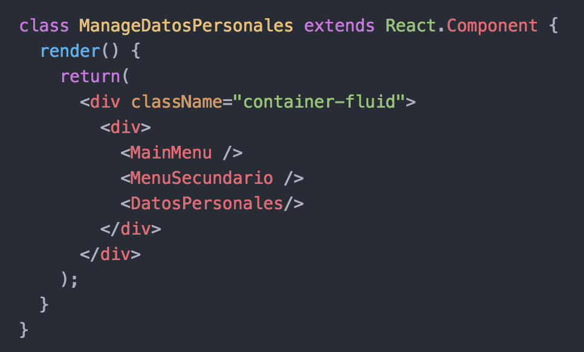
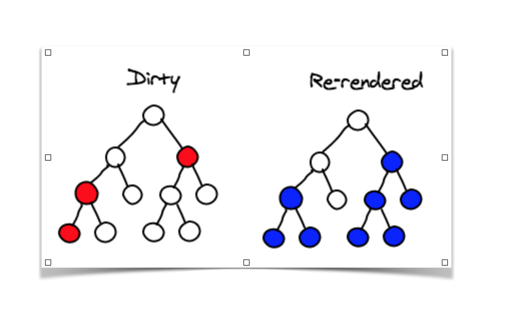
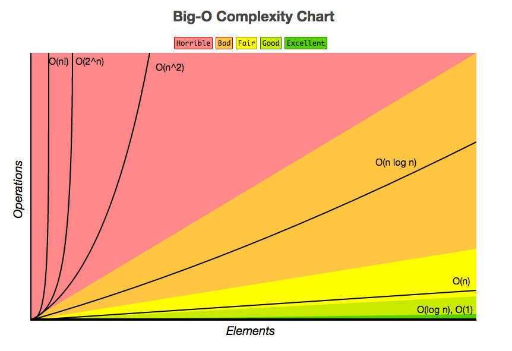
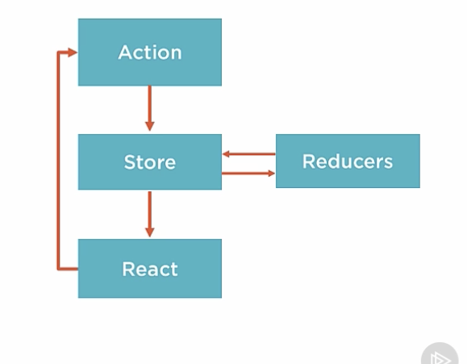
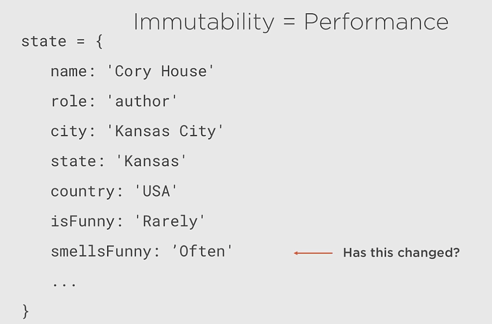

React + Redux Introduction
@risijara
Team Darwin
What is React?
React is a library for building composable user interfaces. It encourages the creation of reusable UI components which present data that changes over time.
Built by Instagram & Facebook
React is not a MVC framework
React is just the V in MVC
React is:
Declarative
Component-Based
Fast
Declarative
Imperative way:
==
Go to school
Get into classes
Do homework
Do tests
...
Apply a degree test
Declarative way:
==
Get a software engineering degree
Declarative
let imperativeWay = () => {
if (user.likes()) {
if (!hasBlue()) {
removeGrey();
addBlue();
}
} else {
if (hasBlue()) {
removeBlue();
addGrey();
}
}
}
let declarativeWay = () => {
if (this.state.liked) {
return ;
} else{
return ;
}
}
Component Based
Component Based
Fast
React is so fast because it never talks to the DOM directly. React maintains a fast in-memory representation of the DOM.
render() methods return a description of the DOM, and React can diff this description with the in-memory representation to compute the fastest way to update the browser.
Fast
Whenever you call setState on a component, React will mark it as dirty.
Fast
At the end of the event loop, React looks at all the dirty components and re-renders them.
Fast
React works with a novel diff algorithm with complexity O(n)
React Components
Components let you split the UI into independent, reusable pieces, and think about each piece in isolation.
class Greeting extends React.Component {
render() {
return Hello, {this.props.name}
;
}
}
The Component Lifecycle
Each component has several "lifecycle methods" that you can override to run code at particular times in the process.
Mounting: Methods are called when an instance of a component is being created and inserted into the DOM.
The Component Lifecycle
Updating: Methods are called when a component is being re-rendered.
Unmounting: Methods are called when a component is being removed from the DOM.
Facebook Reference
Redux
Redux is a predictable state container for JavaScript apps.
It helps you write applications that behave consistently, run in different environments (client, server, and native), and are easy to test.
React + Redux Unidirectional Data Flow
Immutability = Clarity & Performance

if ( previousStoreState !== storeState ) { ...